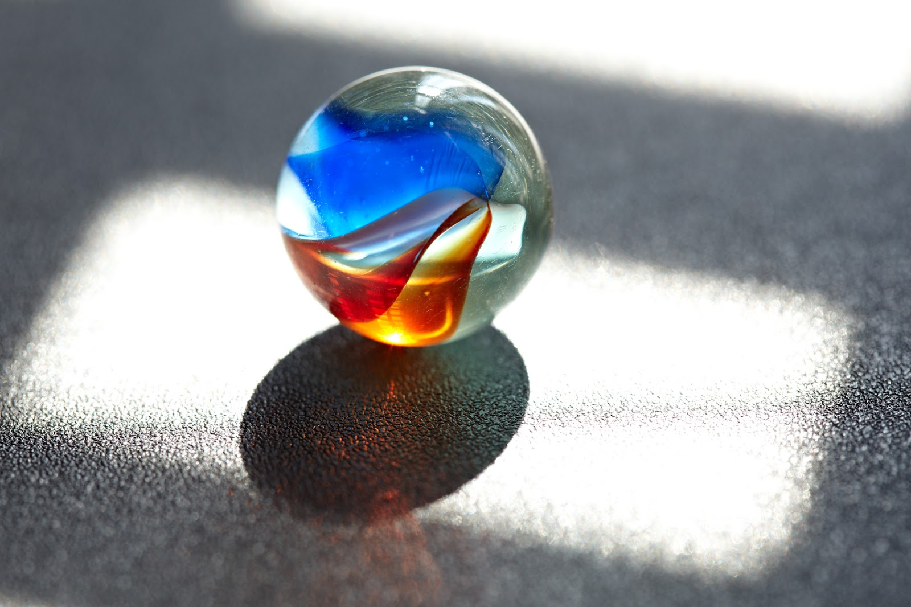

Una canica es una pequeña esfera que puede ser de diversos materiales como: vidrio, alabastro, cerámica, arcilla, metal, cristal, acero, piedra, mármol, madera o porcelana; y que se utiliza en diversos juegos infantiles. Aunque su origen sigue siendo un misterio se han encontrado canicas presentes en la tumba de un niño egipcio de alrededor del año 3000 a.C.
Se introduce la arena sílica (material del que se obtiene el vidrio) en unos hornos a una temperatura aproximada de 1.500 ºC, hasta que se obtiene un líquido espeso, el cual después es volcado en unos contenedores especiales y se dejan enfriar de 3 a 5 horas para después poder moldearlas.
para saber com se juega con canicas visita: juegos
| canicas de agua | están hechas de un gel que tiene como función de mantener nuestras plantas hidratadas y así duran por mucho más tiempo |
|---|---|
| canicas medianas | La mejor selección de canicas de colores medianas y bolitas medianas con varios motivos. Todas las canicas tienen una medida de 16 mm a 22 mm. |
| canicas clasicas | deesde 16 mm hasta 42 mm |
| canicas de cristal | Son las más comunes de ver y que todo coleccionista debe tener. También son muy usadas para jugar |